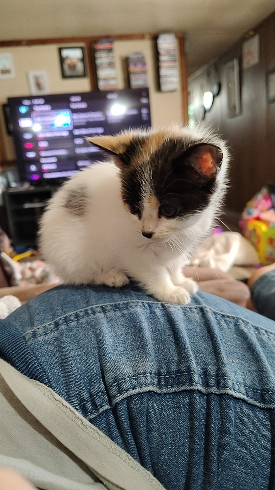

This is Kaliyah Jackson Lintz, she is an 9 month old kitten. We got her April 11th 2026, when she was just 10 weeks old! omg such a baby lol, I miss it ! On April 11th, We were not expecting to bring home a kitten.. like at all ! ahah! We had to call her lovely Meowmi(Grandma) once we saw her because she was just too cute not to bring home ! And after some thinking, Her Meowmi said yes ! And ever since, she has been by Momma C and Momma S's side forever! She has always had a little bit of attiude, but now as a teenager.. oh boy.. she's a mean one !! When we brought her back to my sister's house, she was scared of course, who wouldn't be scared after getting taken from your siblings and parents? lol but she wasn't mean when we brought her there, she was actually quite nice until 3-4 days later.. she finally started playing !! haha and her claws were sharp, and I mean SHARP.. have you ever felt a kitten's uncut nails before!? If not, they HURT badly. After like 2 weeks of having her, we finally went home and she had to readjust again.

After we got home, She was not allowed to free roam the house because my mom's uncle had a big dog named Louise and if Louise ever saw Kaliyah she would probably act out and try to hurt Kaliyah and we didn't want that happening so we agreed to keep her only in our rooms and we did very good until we got kicked out in late May. During the stay at our home at that time, she became very playful and energetic.. even tried catnip for the first time there! Once we found out about us getting kicked out, since my mom didn't have a job at the time, we worried about having to go into assisted living or homeless shelter and worried about Kaliyah not being vaccinated so we got help from my uncle Jimmy, and we went to her first vet appointment ever! During the visit, we kept her wrapped in a blanket until the vet tech came in and inspected her. Kaliyah was hissing a lot, but she's nice so that's all she did. The vet tech said she looks healthy and asked what vaccines we wanted. We wanted all of them obviously lol, so then they handed us Kaliyah and went to get the Vet. The vet comes in along with the same 2 girls and we hand Kaliyah back and they give her the vaccines and told us she might be sleepy for the rest of the day and yes! she was!
That's all I think.. all that I can remember.. costed $96.
this is Kali chilling lol
So Im running out of ideas of what to tell y'all so I will just tell y'all about her now lol. She is a mean ol' cat! she runs around and gets the zoomies in Meowmi's new nice RV! already scratched the couch up!! Meowmi is still mad at her about that and I don't blame her, That was one of the rules of bringing her with us so.. :)
Kaliyah is very needy, She will wake you up very early just so you can feed her! and yes, she has a big appetite like her Momma C. Kaliyah also became a cat and not a kitten whenever Momma C and Momma S were at Auntie K's house! yessss! she got her first ever heat! (period) and I'm so sad I wasn't there for my baby but i'm so glad she's growing up .. so bittersuite.